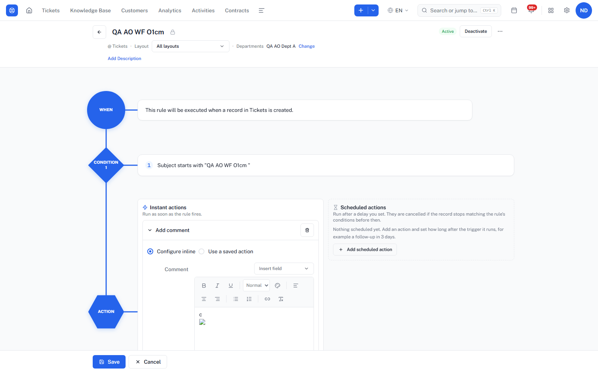
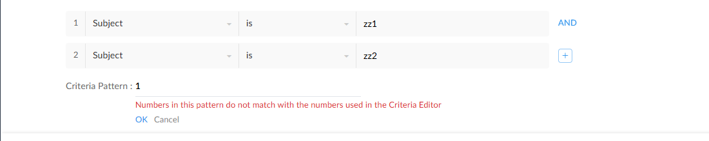
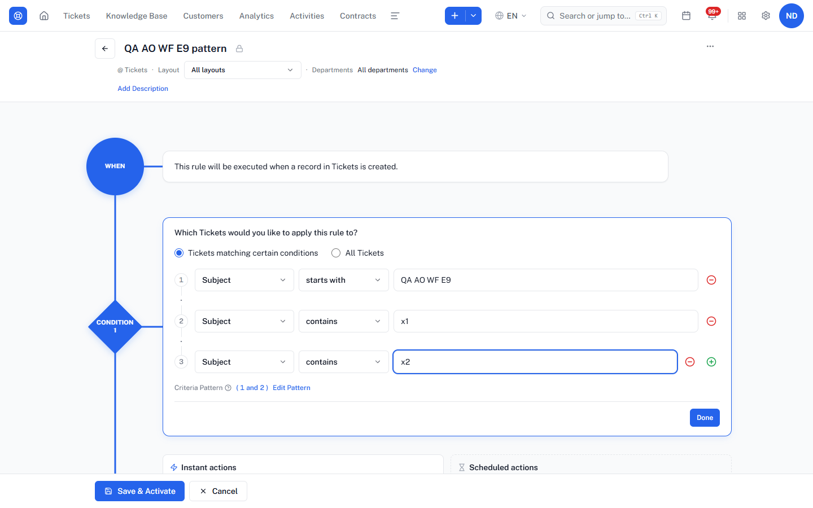
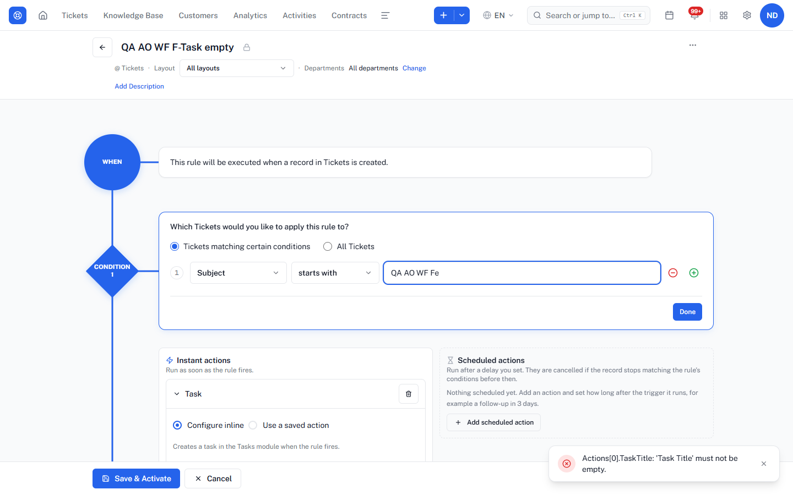
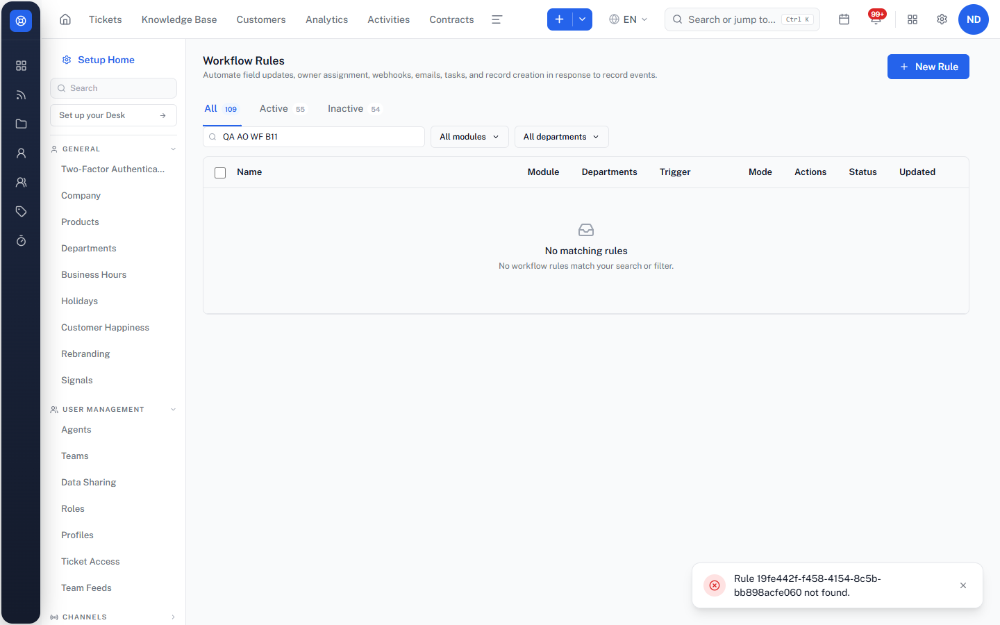
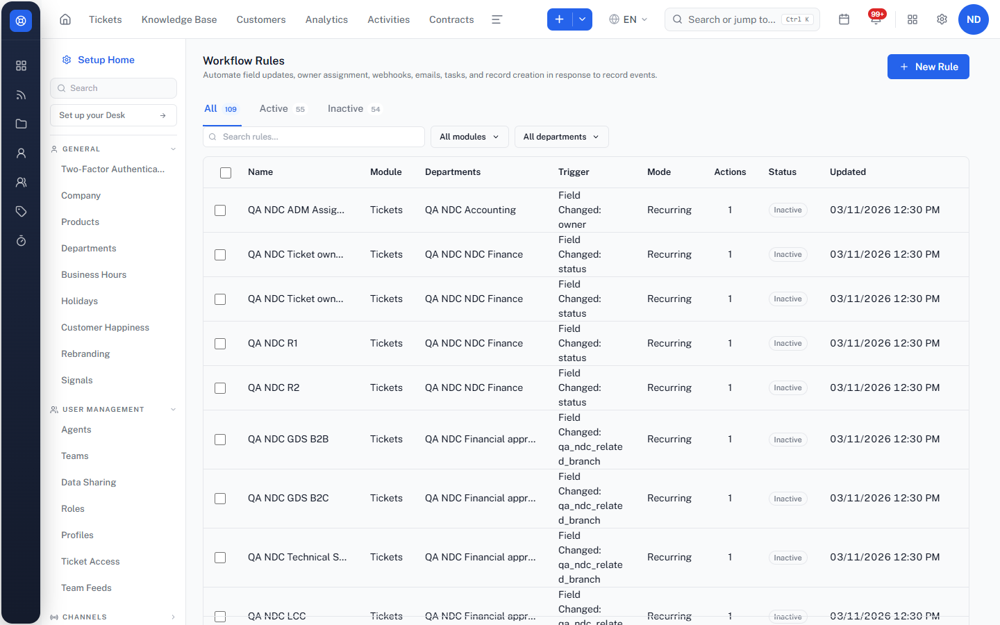
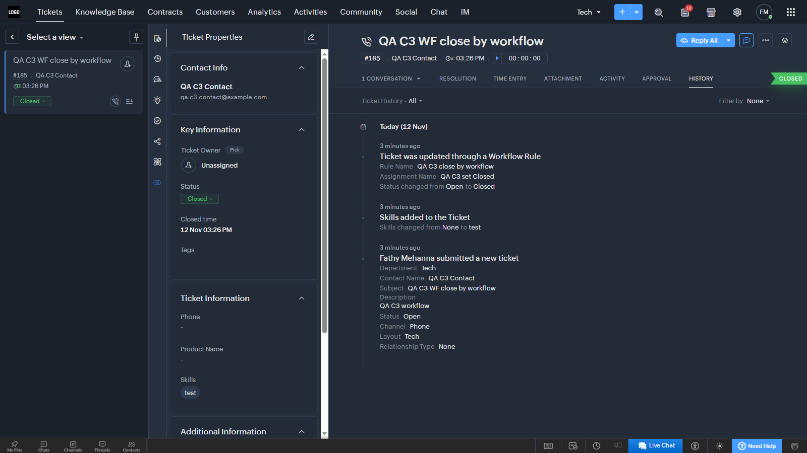

Desk Workflow Rules: findings
TAVI Desk on NDC-Staging, automation-order run part A4, 11–12 Nov 2026. Only the rows marked FINDING: issues where the spec had no clear pass/fail, or that need your call. Each one compared with Zoho Desk (live techsolutionsegypt, nothing saved, plus help.zoho.com). Clear failures are in report-workflow-bugs.html. Nothing is filed in Plane.
10findings (14 A4 rows; P18 and P25 also count as Z19 and Z28)
3differ from Zoho → parity bugs
2defects with no Zoho equivalent
3in TAVI-only features
1Zoho not compared yet
"vs Zoho": DIFFERS Zoho behaves differently, expected result is Zoho's. BUG nothing comparable in Zoho, still a defect. NO ZOHO TAVI-only feature, not a parity bug. NOT CHECKED Zoho comparison still open.
Summary
| Id | Case | Severity | vs Zoho | Finding |
|---|
| FN-02 | O1 | High | BUG | Script saved in an Add Comment action body runs when an admin opens the rule |
| FN-08 | E9 | Medium | DIFFERS | A criteria pattern that leaves a condition out is accepted; the condition is silently ignored |
| FN-09 | L1 | Medium | NO ZOHO | Test rule ignores the sample record id |
| FN-07 | I30 | Low | BUG | "Send happiness email" says Succeeded while ratings are switched off |
| FN-10 | F9 / F12 | Low | NO ZOHO | Empty Webhook URL / Task title: raw server text instead of an on-screen check |
| FN-11 | C4 / C7 | Low | DIFFERS | Name and description limits are only enforced at save |
| FN-12 | B11 | Low | NO ZOHO | Bulk delete where one rule is already gone: raw id toast, no summary |
| FN-13 | B2 | Low | DIFFERS | Trigger column shows internal field names and "1 days" |
| FN-15 | P18 (= Z19) | Low | NOT CHECKED | Add Ticket Followers skips agents who cannot see the ticket, but the execution still says Succeeded |
| FN-16 | C3 / P25 (= Z28) | Low | SAME | A ticket closed by a workflow Field Update: history does not show the status change |
Details
FN-02 High Security case O1 · WF-02 in the bugs reportScript saved in an Add Comment action body runs when an admin opens the rule
vs Zoho: BUG Not documented in Zoho; no Zoho behaviour to copy. Security defect regardless.
Steps
- Save a rule (through the API) whose Add Comment body contains
<img src=x onerror="window.__xss=1">. - As an admin, open the rule in the editor.
Expected
Text entered in any action field is always shown as plain text in the rule editor; no script runs.
Actual (TAVI)
The script runs in the editor (window.__xss is set). Name, description, list, Execution History and the ticket comment are all safe.
API-only input, but the editor is the one rendering it unsafely.
TAVI screenshot

A criteria pattern that leaves a condition out is accepted; the condition is silently ignored
vs Zoho: DIFFERS Live Zoho: pattern "1" with 2 conditions → red "Numbers in this pattern do not match with the numbers used in the Criteria Editor"; OK does not apply it.
Zoho screenshot

Steps
- Rule with 3 conditions.
- Edit Pattern →
1 and 2 → Apply → Save.
Expected (Zoho Desk)
A pattern that does not use every condition number (or uses one that doesn't exist) is refused with "Numbers in this pattern do not match with the numbers used in the Criteria Editor", and the rule can't be saved with it.
Actual (TAVI)
Accepted: condition 3 stays on screen but is not part of the criteria. Other pattern errors are good ("Pattern ends unexpectedly.", "Missing closing parenthesis.", "Pattern refers to condition 4, which doesn't exist."). 1 and 2 or 3 is read as ((1 and 2) or 3) without asking.
TAVI screenshot

Test rule ignores the sample record id
vs Zoho: NO ZOHO Zoho has no test/dry-run for workflow rules (help FAQ: test by creating a real ticket). TAVI extra.
Steps
- Open a saved rule › Test rule.
- Enter the id of a ticket that matches, leave the field values JSON empty, run.
Expected (no Zoho equivalent)
If kept: the sample record's values are used when no values are typed.
Actual (TAVI)
"Not matched" unless the values are typed in as JSON. The panel's example JSON is CRM-style (revenue, intValue). Nothing is saved (correct).
Seen through the same API the panel calls: POST /workflow/rules/{id}/execute {recordId, triggerKind, fields}.
"Send happiness email" says Succeeded while ratings are switched off
vs Zoho: BUG Zoho: what happens while ratings are off is not documented (rating email sent by an Alert with ${Cases.Customer Happiness Rating}). Checked against TAVI's own help text.
Steps
- Customer Happiness off (original tenant setting).
- Rule with action Send happiness email; create a ticket.
Expected
Nothing is sent and the execution says it was skipped because ratings are off (not "Succeeded").
Actual (TAVI)
Dispatch SendHappinessEmail Succeeded, no reason, nothing in the ticket history.
Same blind spot as P18 (skipped agents shown as Succeeded).
Empty Webhook URL / Task title: raw server text instead of an on-screen check
vs Zoho: NO ZOHO Zoho workflows have no Webhook action; Zoho task validation texts are not documented. TAVI wording issue only.
Steps
- Add a Webhook (no URL) or a Task (no title).
- Save & Activate.
Expected (no Zoho equivalent)
If kept: a short on-screen message like the other actions ("Enter the webhook URL", "Enter a task title").
Actual (TAVI)
Red toast with server text: "Actions[0].Url: 'Url' must not be empty.; … Actions[0].BodyTemplate: …" / "Actions[0].TaskTitle: 'Task Title' must not be empty."
Webhook screen: evidence/a4-bugs/F9-webhook-raw-server-text.png.
TAVI screenshot

Name and description limits are only enforced at save
vs Zoho: DIFFERS Live Zoho: the Rule Name box has maxlength 50 and stops typing at 50 characters; the Description box has no limit.
Steps
- Type a 1000-character rule name (or a 5000-character description).
- Save.
Expected (Zoho Desk)
The rule-name box stops at the limit while typing (Zoho: 50); no surprise error at save. Description: no limit is needed (Zoho has none), so the 2000 server limit should be shown on the box if kept.
Actual (TAVI)
No limit in the box; the server refuses at save: name 200 ("must be 200 characters or fewer"), description 2000.
Bulk delete where one rule is already gone: raw id toast, no summary
vs Zoho: NO ZOHO Zoho has no bulk delete of rules (help: one rule at a time, delete icon + OK). TAVI extra.
Steps
- Select 2 rules › Delete (2).
- Before confirming, one of them is deleted elsewhere.
- Confirm.
Expected (no Zoho equivalent)
If kept: a summary such as "1 deleted, 1 not found" with names.
Actual (TAVI)
Toast "Rule 19fe442f-f458-4154-8c5b-bb898acfe060 not found."; the other rule is deleted. Same raw-id toast on save after delete (G6).
TAVI screenshot

Trigger column shows internal field names and "1 days"
vs Zoho: DIFFERS Zoho shows field labels everywhere in the rule (Execute on / criteria use labels, e.g. "Field Update" on "Status"); internal names are never shown (live editor).
Steps
- Open Settings › Workflow Rules.
Expected (Zoho Desk)
Trigger shown with field labels ("Field Changed: QA NDC Related Branch", "1 day before Due Date").
Actual (TAVI)
"Field Changed: qa_ndc_related_branch", "Date-Field Relative: due_date (1 days before)". Same in Arabic.
TAVI screenshot

Add Ticket Followers skips agents who cannot see the ticket, but the execution still says Succeeded
vs Zoho: NOT CHECKED Not compared: Zoho help does not say what happens to followers who cannot see the ticket, and trying it live would save a rule in Zoho.
Steps
- Rule On Create with action Add Ticket Followers, choosing agents of whom some have no access to the ticket's department.
- Create a ticket in that department.
Expected
Agents who can't see the ticket are either refused when the rule is saved, or the execution shows them as skipped with the reason (not a plain "Succeeded").
Actual (TAVI)
Only the agents with access became followers; the others were dropped silently. Execution History: AddTicketFollowers Succeeded, no warning.
Same access rule as NDC-2852 (SLA escalation skips chosen agents without ticket access).
A ticket closed by a workflow Field Update: history does not show the status change
vs Zoho: SAME Rechecked TAVI 12 Nov 19:00 (#3161): history now shows "Status was updated Open → Closed" and "Workflow rule ran · Rule QA AO WF EV7 · Actions Field Update · by workflow rule" — same information as Zoho, so NOT filed. Zoho checked live 12 Nov (techsolutionsegypt, contact notification "Closing a ticket" turned on for the test, off again after). Closed by a workflow Field Update (#185 on Create, #186 on Edit): NO closed mail in Zoho either. Closed by an agent (#184): closed mail sent ("Notification Rule Applied: Acknowledge Contact when the Ticket is closed"). So the missing mail is Zoho behaviour, NOT a bug. The difference is the history: Zoho writes "Ticket was updated through a Workflow Rule · Rule Name QA C3 close by workflow · Assignment Name QA C3 set Closed · Status changed from Open to Closed".
Zoho screenshot

Steps
- Rule: Field Update Status = Closed on a ticket condition.
- Fire it on a ticket (on create, or by editing the ticket).
- Open the ticket History.
Expected
History shows that the workflow changed the status, as in Zoho: "Ticket was updated through a Workflow Rule", the rule name, the field update name and "Status changed from Open to Closed". No closed mail is expected (Zoho sends none when a workflow closes the ticket).
Actual (TAVI)
Ticket #2952 closed by the rule: history only "Workflow rule ran", no status line. No closed mail and no rating request (same as Zoho, so not a bug). Ticket #2951 closed with the close action: closed mail + rating (same as Zoho).
Zoho agent-close comparison: evidence/a4-bugs/C3-zoho-manual-close-mail-sent.png. All Zoho test data deleted (rule, field update, tickets #184–186, contact) and the notification switched back off.
Ids FN-xx follow the WF-xx numbers in the bugs report (FN-08 = WF-08); FN-15 and FN-16 are only here. Sources: PROGRESS.md, a4 results, screen steps s1–s28. Test data was deleted after each test.